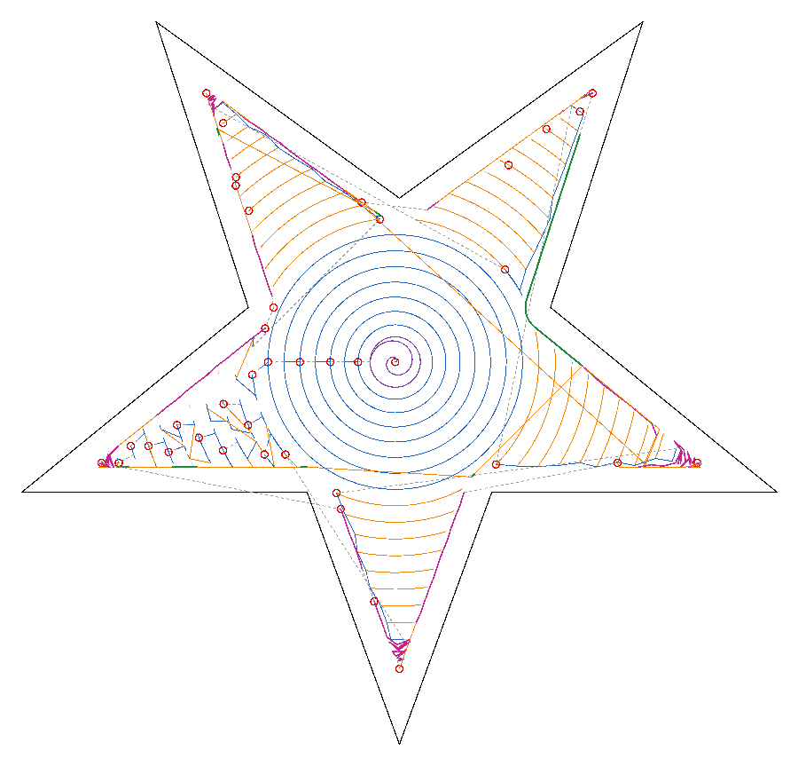
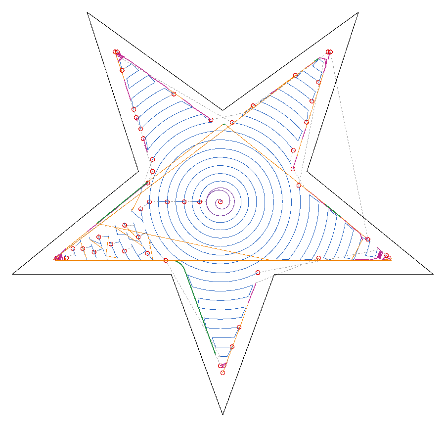
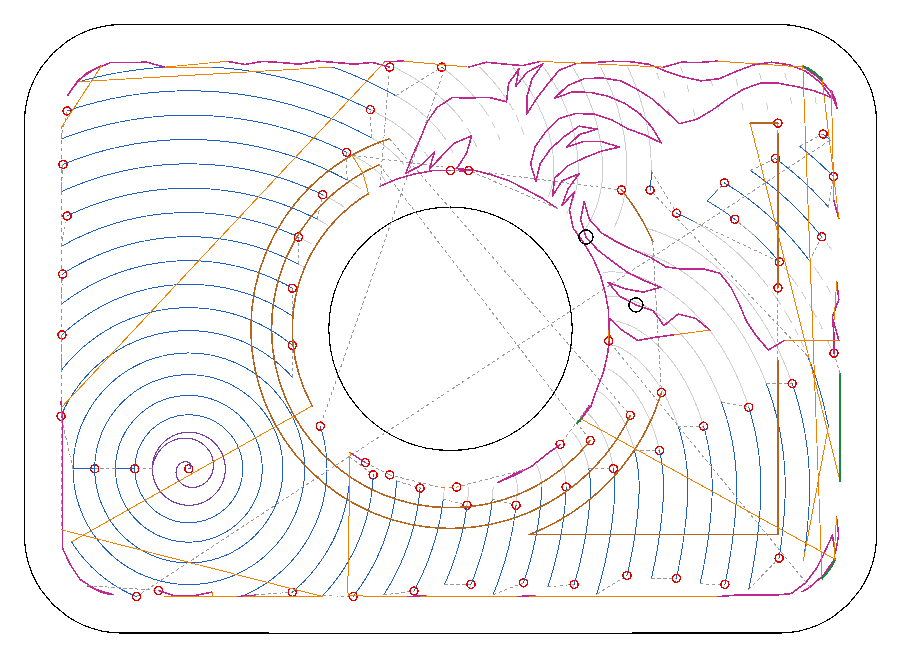
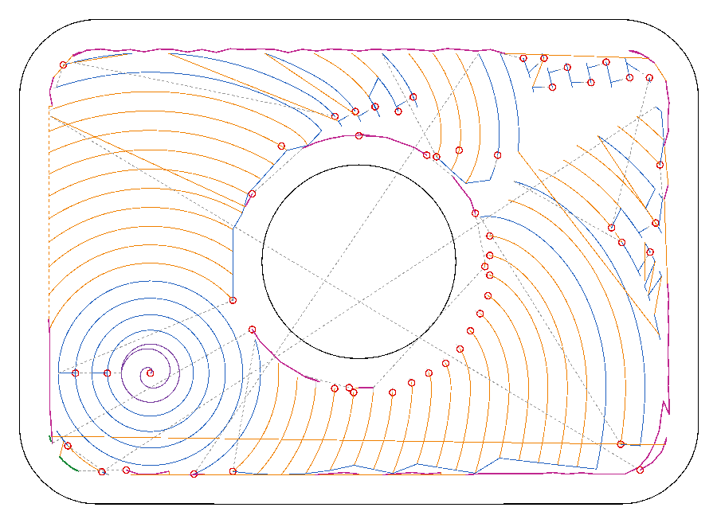
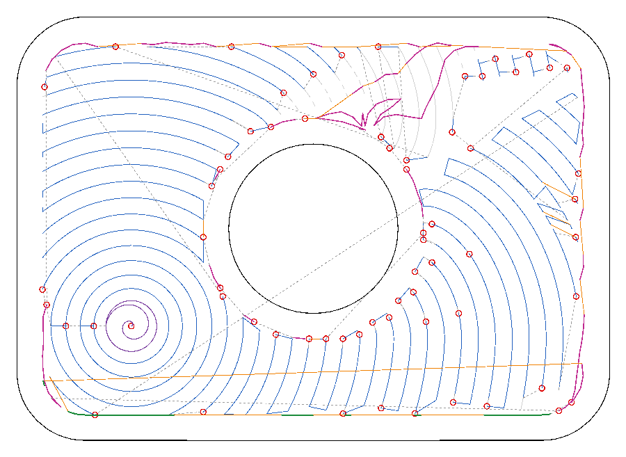

Colours: blue = clearing cuts, orange = links (keep-down, at depth, through cut area), magenta = residue passes, green = wall pass, red rings = entries (plunges). The base is geodesic_curv (v4), NOT yet the (a) local-curvature spacing from the far-side pages, so the pocket far side keeps its old spacing. A turn may go over the steady load ceiling (your ruling): it is at most 3.2 mm long and its feed is cut to about 0.45 of the normal feed. No ranking.
(a) plain seam — state at v4

star / geodesic_curv
pieces: 1
cut length: 1051.5 mm
keep-down links: 98 (236.7 mm)
entries (plunges): 73
retracts (lifts to safe Z, last included): 73
pass load (planner readout, replay measure SweptWidth): max 0.3581 vs ceiling 0.3626; 0 of 2716 steps over; 0 exempt plunge-departure steps
both measures of the emitted steps (fraction of D, ceiling 0.3626): swept width max 0.3581, 0 over; area per mm max 0.6094, 822 over
entries by producer: starter 1, clearing at a lead-in (L) 0, clearing at a wrap end (join) 58, clearing mid-wrap (replay split) 0, residue contour 0, wall pass 0, residue mop 14, other 0
one-way (climb) + keep-down return link + turn (C14)

star / geodesic_curv_oneway
pieces: 1
cut length: 1192.5 mm
keep-down links: 928 (588.7 mm)
entries (plunges): 39
retracts (lifts to safe Z, last included): 39
pass load (planner readout, replay measure SweptWidth): max 0.8301 vs ceiling 0.3626; 0 of 3689 steps over; 0 exempt plunge-departure steps
both measures of the emitted steps (fraction of D, ceiling 0.3626): swept width max 0.8301, 73 over; area per mm max 0.9997, 985 over
entries by producer: starter 1, clearing at a lead-in (L) 0, clearing at a wrap end (join) 26, clearing mid-wrap (replay split) 0, residue contour 0, wall pass 0, residue mop 12, other 0
arcs piece 0: style OneWay; arc-to-arc joins 44: clearing turns 40, over the bound 3.207 mm 4, straight step outside the region 0; turn length 1.745 to 2.727 mm; return links 876 (338.7 mm)
steps on no turn (emitted): max 0.3586 vs ceiling 0.3626, 0 over
clearing turns (emitted): 40 of 40 planned; 80 turn steps, 73 over the ceiling (the counted exemption); turns with the reduced feed 40, without 0
zigzag + turn (C14)

star / geodesic_curv_zigzag
pieces: 1
cut length: 1177.2 mm
keep-down links: 82 (394.3 mm)
entries (plunges): 50
retracts (lifts to safe Z, last included): 50
pass load (planner readout, replay measure SweptWidth): max 0.8956 vs ceiling 0.3626; 0 of 2923 steps over; 0 exempt plunge-departure steps
both measures of the emitted steps (fraction of D, ceiling 0.3626): swept width max 0.8956, 73 over; area per mm max 0.9611, 969 over
entries by producer: starter 1, clearing at a lead-in (L) 0, clearing at a wrap end (join) 30, clearing mid-wrap (replay split) 0, residue contour 0, wall pass 0, residue mop 19, other 0
arcs piece 0: style Zigzag; arc-to-arc joins 44: clearing turns 40, over the bound 3.207 mm 4, straight step outside the region 0; turn length 0.643 to 2.727 mm; return links 0 (0.0 mm)
steps on no turn (emitted): max 0.3589 vs ceiling 0.3626, 0 over
clearing turns (emitted): 40 of 40 planned; 78 turn steps, 73 over the ceiling (the counted exemption); turns with the reduced feed 39, without 1
(a) plain seam — state at v4

pocket / geodesic_curv
pieces: 1
cut length: 1343.7 mm
keep-down links: 173 (382.7 mm)
entries (plunges): 63
retracts (lifts to safe Z, last included): 63
pass load (planner readout, replay measure SweptWidth): max 0.4677 vs ceiling 0.3626; 2 of 3250 steps over; 0 exempt plunge-departure steps
both measures of the emitted steps (fraction of D, ceiling 0.3626): swept width max 0.4677, 2 over; area per mm max 0.6094, 817 over
entries by producer: starter 1, clearing at a lead-in (L) 0, clearing at a wrap end (join) 34, clearing mid-wrap (replay split) 12, residue contour 6, wall pass 0, residue mop 10, other 0
one-way (climb) + keep-down return link + turn (C14)

pocket / geodesic_curv_oneway
pieces: 1
cut length: 1321.6 mm
keep-down links: 1585 (865.1 mm)
entries (plunges): 54
retracts (lifts to safe Z, last included): 54
pass load (planner readout, replay measure SweptWidth): max 0.9460 vs ceiling 0.3626; 0 of 4639 steps over; 0 exempt plunge-departure steps
both measures of the emitted steps (fraction of D, ceiling 0.3626): swept width max 0.9460, 65 over; area per mm max 1.0322, 1219 over
entries by producer: starter 1, clearing at a lead-in (L) 0, clearing at a wrap end (join) 42, clearing mid-wrap (replay split) 2, residue contour 0, wall pass 0, residue mop 9, other 0
arcs piece 0: style OneWay; arc-to-arc joins 51: clearing turns 41, over the bound 3.207 mm 10, straight step outside the region 0; turn length 1.750 to 3.011 mm; return links 1466 (593.4 mm)
steps on no turn (emitted): max 0.3624 vs ceiling 0.3626, 0 over
clearing turns (emitted): 41 of 41 planned; 83 turn steps, 65 over the ceiling (the counted exemption); turns with the reduced feed 41, without 0
zigzag + turn (C14)

pocket / geodesic_curv_zigzag
pieces: 1
cut length: 1212.9 mm
keep-down links: 30 (185.5 mm)
entries (plunges): 66
retracts (lifts to safe Z, last included): 66
pass load (planner readout, replay measure SweptWidth): max 0.9460 vs ceiling 0.3626; 0 of 2819 steps over; 0 exempt plunge-departure steps
both measures of the emitted steps (fraction of D, ceiling 0.3626): swept width max 0.9460, 65 over; area per mm max 1.0851, 1090 over
entries by producer: starter 1, clearing at a lead-in (L) 0, clearing at a wrap end (join) 48, clearing mid-wrap (replay split) 4, residue contour 0, wall pass 0, residue mop 13, other 0
arcs piece 0: style Zigzag; arc-to-arc joins 51: clearing turns 43, over the bound 3.207 mm 8, straight step outside the region 0; turn length 0.284 to 3.203 mm; return links 0 (0.0 mm)
steps on no turn (emitted): max 0.3610 vs ceiling 0.3626, 0 over
clearing turns (emitted): 43 of 43 planned; 81 turn steps, 65 over the ceiling (the counted exemption); turns with the reduced feed 42, without 1